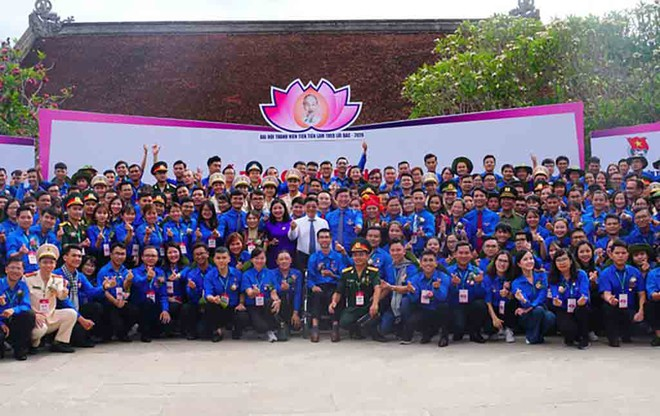
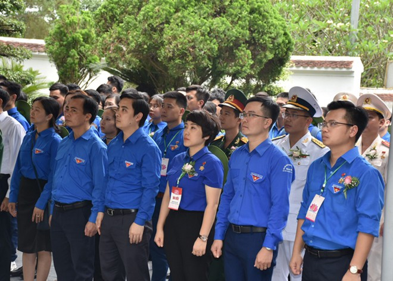

Tại hội nghị Ban thường vụ T.Ư Đoàn diễn ra sáng 6.1, T.Ư Đoàn đã công bố 14 sự kiện, hoạt động tiêu biểu của Đoàn Thanh niên năm 2020.
Các đại biểu tham dự Đại hội thanh niên tiên tiến làm theo lời Bác
ẢNH ĐĂNG HẢICụ thể 14 sự kiện, hoạt động tiêu biểu của Đoàn Thanh niên năm 2020 như sau:
Đại hội diễn ra từ ngày 30, 31.5.2020, tại Nghệ An, Hà Tĩnh. Tham gia đại hội có 401 đại biểu là những cán bộ, đoàn viên, thanh niên có thành tích xuất sắc, là tấm gương điển hình trong học tập và làm theo tư tưởng, đạo đức, phong cách Hồ Chí Minh có đạo đức tốt, tích cực tham gia các hoạt động, công tác xã hội; có uy tín và ảnh hưởng tốt trong đoàn viên. Đặc biệt, trong 2 ngày diễn ra Đại hội, các đại biểu tham gia thảo luận tại 6 diễn đàn ý nghĩa. Nét mới tại diễn đàn là lấy đại biểu thanh niên tiên tiến làm trung tâm. Những vấn đề về lý luận hàn lâm giảm thiểu tối đa để các bạn tập trung vào những câu chuyện từ nhận thức, tình cảm với Bác Hồ, gắn với thực tiễn công việc của mỗi thanh niên tiên tiến trong từng lĩnh vực của mình.
Các đại biểu tham dự Đại hội thanh niên tiên tiến làm theo lời Bác
ẢNH ĐĂNG HẢIVới chủ đề “Tự hào truyền thống sinh viên Việt Nam”, T.Ư Hội Sinh viên Việt Nam đã tổ chức Lễ kỷ niệm 70 năm Ngày truyền thống học sinh, sinh viên và Hội Sinh viên Việt Nam với gần 2.000 hội viên, sinh viên tham dự. Hội SVVN đón nhận huân chương Độc lập hạng nhất (lần thứ 2); tuyên dương 269 sinh viên đạt danh hiệu “Sinh viên 5 tốt” cấp T.Ư (nhiều nhất từ trước đến nay) và trao giải thưởng “Sao Tháng Giêng” năm 2019 cho 100 sinh viên, 10 tập thể có thành tích tiêu biểu, xuất sắc trong công tác Hội và phong trào sinh viên nhận bằng khen của Thủ tướng Chính phủ. Đã có 48 công trình cấp tỉnh, 299 công trình cấp trường được tổ chức dịp kỷ niệm 70 năm Ngày truyền thống học sinh, sinh viên và Hội Sinh viên Việt Nam.
Các đại biểu tham dự Đại hội thanh niên tiên tiến làm theo lời Bác
ẢNH ĐĂNG HẢITrong đợt hoạt động cao điểm Kỷ niệm 70 năm Ngày truyền thống Lực lượng Thanh niên xung phong (TNXP) Việt Nam, T.Ư Đoàn đã trao tặng 21 Nhà nhân ái cho cựu TNXP có hoàn cảnh khó khăn, trị giá 1.250 triệu đồng; 90 sổ tiết kiệm trao tặng cựu TNXP có hoàn cảnh khó khăn, trị giá 310 triệu đồng; 700 phần quà trao tặng cựu TNXP và con em cựu TNXP có hoàn cảnh khó khăn, trị giá 840 triệu đồng. Về phía T.Ư Hội Cựu TNXP Việt Nam, đã vận động tặng 10 nhà tình nghĩa; 2.969 phần quà; 70 xe đạp. Hội Cựu TNXP các tỉnh, thành phố đã vận động trao tặng 20.070 phần quà; 68 nhà tình nghĩa; 170 sổ tiết kiệm. Tổng giá trị quà tặng hỗ trợ 12,369 tỉ đồng.
Hành trình “Tôi yêu Tổ quốc tôi” năm 2020 được T.Ư Hội Liên hiệp Thanh niên Việt Nam tổ chức nhằm cụ thể hóa phong trào Tôi yêu Tổ quốc tôi và chào mừng các ngày lễ lớn trọng đại của đất nước. Hành trình “Tôi yêu Tổ quốc tôi” là hành trình của mỗi hội viên, thanh niên tri ân những đóng góp của các thế hệ cha anh đi trước đã góp phần mang lại hoà bình, độc lập dân tộc. Qua đó, lan toả sâu rộng trong thế hệ trẻ tình yêu quê hương, đất nước, tri ân công lao, sự hy sinh của các thế hệ cha anh đi trước vì hòa bình, độc lập dân tộc, dân chủ và tiến bộ xã hội, động viên thanh niên tu dưỡng, học tập, rèn luyện để sống có ích, có ý nghĩa, chứng tỏ bản lĩnh, sức trẻ, sự sáng tạo, tinh thần dám nghĩ, dám làm để phụng sự Tổ quốc, phục vụ nhân dân.
Long An: Đông người căng băng rôn bao vây Công ty Bất động sản Trần Anh
Bắt kho hàng lậu hàng ngàn sản phẩm đồ gia dụng điện tử
Gương mặt showbiz: Đỗ Hoàng Dương và Cody bật mí hậu trường web-drama đam mỹ
Long An: Đông người căng băng rôn bao vây Công ty Bất động sản Trần Anh
Bắt kho hàng lậu hàng ngàn sản phẩm đồ gia dụng điện tử
Gương mặt showbiz: Đỗ Hoàng Dương và Cody bật mí hậu trường web-drama đam mỹ
Long An: Đông người căng băng rôn bao vây Công ty Bất động sản Trần Anh
Bắt kho hàng lậu hàng ngàn sản phẩm đồ gia dụng điện tử
Gương mặt showbiz: Đỗ Hoàng Dương và Cody bật mí hậu trường web-drama đam mỹ